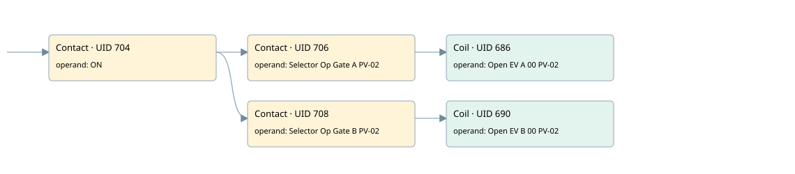

evr4 scraps discharge door and gates selector pv-02
r1 scraps gate 2 · 검색 색인 순서 9 · 원본 내부 NID 추정 7
백업 PLF 원본의 2834851 바이트 위치에서 복원한 XML. 검색 문서 1919의 객체 키 16102200e511000000000000와 연결했다. 이름 해석 5/5개. 남은 RefId는 상수 또는 미해석 참조다.
연결 구조 다시 그리기
원본 Part/PCon/Wire를 이용한 연결도다. TIA 화면의 래더 배치 또는 실행 결과를 재현한 그림은 아니다. 핀 연결은 아래 표와 원본 XML을 기준으로 읽는다. 노드 위에 마우스를 두면 피연산자 이름을 볼 수 있다.

접점·코일·블록과 피연산자
| Part UID | Gate | Negated 핀 | 연결 피연산자 |
|---|---|---|---|
| 704 | Contact | operand = ON | |
| 706 | Contact | operand = Selector Op Gate A PV-02 | |
| 686 | Coil | operand = Open EV A 00 PV-02 | |
| 708 | Contact | operand = Selector Op Gate B PV-02 | |
| 690 | Coil | operand = Open EV B 00 PV-02 |
접점 경로를 펼친 조건식
Contact·O/A·비교기의 원본 연결을 읽기 쉽게 펼친 보조 해석이다. POWER는 전원 레일 시작을 뜻한다. 호출 블록·에지·타이머의 내부 동작과 다중 쓰기 순서는 이 표로 실행 검증하지 않았다. 미해석 핀과 RefId는 원문 연결표에서 확인한다.
| UID | 동작 | 대상 | 원본 접점 경로 | 내용 |
|---|---|---|---|---|
| 686 | Coil | Open EV A 00 PV-02 | (ON AND Selector Op Gate A PV-02) | 조건에 따른 Coil 기록 |
| 690 | Coil | Open EV B 00 PV-02 | (ON AND Selector Op Gate B PV-02) | 조건에 따른 Coil 기록 |
원본 배선 연결
| Wire UID | 동일 Wire 연결 끝점 |
|---|---|
| 710 | Powerrail {} ↔ Part 704.in |
| 696 | ORef 691 (ON) ↔ Part 704.operand |
| 705 | Part 704.out ↔ Part 706.in ↔ Part 708.in |
| 697 | ORef 692 (Selector Op Gate A PV-02) ↔ Part 706.operand |
| 707 | Part 706.out ↔ Part 686.in |
| 699 | ORef 693 (Open EV A 00 PV-02) ↔ Part 686.operand |
| 700 | ORef 694 (Selector Op Gate B PV-02) ↔ Part 708.operand |
| 709 | Part 708.out ↔ Part 690.in |
| 702 | ORef 695 (Open EV B 00 PV-02) ↔ Part 690.operand |
식별자 해석 근거 5개
| ORef UID | RefId | 이름 | IdentXmlPart 파일 | 해석 방법 |
|---|---|---|---|---|
| 691 | 1 | ON | 0607-IdentXmlPart.xml | UID/RID + search-text + NID agreement |
| 692 | 79 | Selector Op Gate A PV-02 | 0607-IdentXmlPart.xml | UID/RID + search-text + NID agreement |
| 693 | 80 | Open EV A 00 PV-02 | 0607-IdentXmlPart.xml | UID/RID + search-text + NID agreement |
| 694 | 81 | Selector Op Gate B PV-02 | 0607-IdentXmlPart.xml | UID/RID + search-text + NID agreement |
| 695 | 82 | Open EV B 00 PV-02 | 0607-IdentXmlPart.xml | UID/RID + search-text + NID agreement |
검색 코드 보조 자료
참조 명칭을 찾기 위한 자료이며 실행 순서나 AND/OR 관계는 위 연결표로 확인한다.
"on" "selector op gate a pv-02" "open ev a 00 pv-02" "selector op gate b pv-02" "open ev b 00 pv-02"